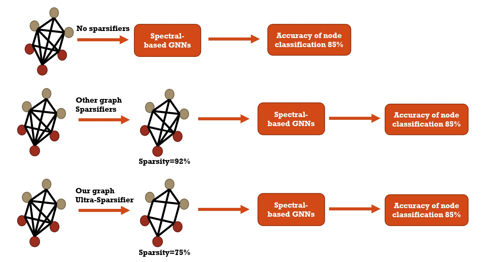
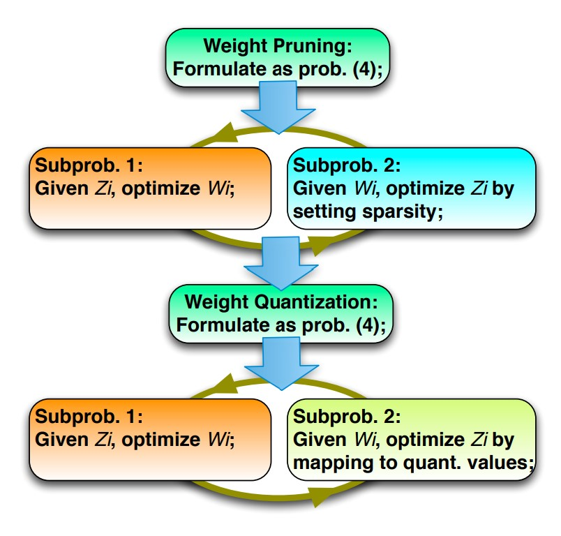

|
Research
My research mainly lies in the following fields of
- Machine Learning and Generative Graph Models with Reinforcement Learning;
- Graph Representation and Sparsification on Large-scale Graphs;
- Deep Neural Networks (DNNs) Compression and Pruning;
- Natural Language Processing and Fake News Detection.
Much of my research now is related to efficient machine learning models in graph mining, computer vision and natural language processing. For example, based on graph neural networks (GNNs), graph signal processing (GSP) and graph spectral theory, I propose several graph sparsifiers to generate sparsified graphs, which can be used to construct better spectral-based filters for spectral-based GNNs, leading to the improvement of perforamnce of GNNs and the acceleration of both training and inference of GNNs. Meanwhile, in terms of pruning weights in Deep Neural Networks (DNNs), the inference of DNNs can accelerated in computer vision tasks without loss of performance. For an up-to-date publication list, please see my Google Scholar.
|
|
Experiences
-

Sep 2018 - Present, Syracuse University,
Research Assistant
Advisor: Prof. Reza Zafarani
-
Sep 2017 - Dec 2022, Syracuse University,
Graduate Teaching Assistant
Teaching Courses: Operating System, Randomized Algorithm and Artificial Neural Networks
|
Selected Publications
Google Scholar for all publications
|
|

|
Semi-Supervised Graph Ultra-Sparsifiers using Reweighted L1 Optimization
Jiayu Li, Tianyun Zhang, Shengmin Jin, Reza Zafarani
Will appear in the IEEE International Conference on Acoustics, Speech and Signal Processing (ICASSP), 2023.
[paper]
More
|

|
A Spectral Measure for Network Robustness: Assessment, Design, and Evolution
Shengmin Jin, Rui Ma, Jiayu Li, Sara Eftekharnejad, Reza Zafarani
IEEE International Conference on Knowledge Graph (ICKG), 2022.
[paper]
More
A spectral measure for network robustness: the second spectral moment m2 of the network. Our results show that a smaller second spectral moment m2 indicates a more robust network. We demonstrate both theoretically and with extensive empirical studies that the second spectral moment can help
- capture various traditional measures of network robustness;
- assess the robustness of networks;
- design networks with controlled robustness;
- study how complex networked systems (e.g., power systems) behave under cascading failures.
|
|
|
A Spectral Representation of Networks: The Path of Subgraphs
Shengmin Jin, Hao Tian, Jiayu Li, Reza Zafarani
Proceedings of the 28th ACM SIGKDD Conference on Knowledge Discovery and Data Mining (KDD), 2022.
[paper]
More
We propose a 3D network representation that relies on the spectral information of subgraphs: the Spectral Path, a path connecting the spectral moments of the network and those of its subgraphs of different sizes. We show that the spectral path is interpretable and can capture relationship between a network and its subgraphs, for which we present a theoretical foundation. We demonstrate the effectiveness of the spectral path in applications such as network visualization and network identification.
|
|
|
AdverSparse: An Adversarial Attack Framework for Deep Spatial-Temporal Graph Neural Networks
Jiayu Li, Tianyun Zhang, Shengmin Jin, Makan Fardad, Reza Zafarani
Proceedings of the IEEE International Conference on Acoustics, Speech and Signal Processing (ICASSP), 2022.
[paper]
More
We propose a sparse adversarial attack framework ADVERSPARSE to illustrate that when only a few key connections are removed in such graphs, hidden spatial dependencies learned by such spatial-temporal models are significantly impacted, leading to various issues such as increasing prediction errors. We formulate the adversarial attack as an optimization problem and solve it by the Alternating Direction Method of Multipliers (ADMM). Experiments show that ADVERSPARSE can find and remove key connections in these graphs, leading to malfunctioning models, even in models capable of learning hidden spatial dependencies.
|
|
|
Graph Sparsification with Graph Convolutional Networks
Jiayu Li, Tianyun Zhang, Hao Tian, Shengmin Jin, Makan Fardad, Reza Zafarani
International Journal of Data Science and Analytics (JDSA), 2022.
[paper]
More
We propose Sparsified Graph Convolutional Network (SGCN), a neural network graph sparsifier that sparsifies a graph by pruning some edges. We formulate sparsification as an optimization problem and solve it by an Alternating Direction Method of Multipliers (ADMM). The experiment illustrates that SGCN can identify highly effective subgraphs for node classification in GCN compared to other sparsifiers such as Random Pruning, Spectral Sparsifier and DropEdge. We also show that sparsified graphs provided by SGCN can be inputs to GCN, which leads to better or comparable node classification performance with that of original graphs in GCN, DeepWalk, GraphSAGE, and GAT. We provide insights on why SGCN performs well by analyzing its performance from the view of a low-pass filter.
|
|
|
SGCN: A Graph Sparsifier Based on Graph Convolutional Networks
Jiayu Li, Tianyun Zhang, Hao Tian, Shengmin Jin, Makan Fardad, Reza Zafarani
Proceedings of the 24th The Pacific-Asia Conference on Knowledge Discovery and Data Mining (PAKDD), 2020.
[paper]
More
We propose Sparsified Graph Convolutional Network (SGCN), a neural network graph sparsifier that sparsifies a graph by pruning some edges. We formulate sparsification as an optimization problem, which we solve by an Alternating Direction Method of Multipliers (ADMM)-based solution. We show that sparsified graphs provided by SGCN can be used as inputs to GCN, leading to better or comparable node classification performance with that of original graphs in GCN, DeepWalk, and GraphSAGE.
|
|

|
ADMM-NN: An Algorithm-Hardware Co-Design Framework of DNNs Using Alternating Direction Methods of Multipliers
Ao Ren, Tianyun Zhang, Shaokai Ye, Jiayu Li, Wenyao Xu, Xuehai Qian, Xue Lin, Yanzhi Wang
Proceedings of the 24th International Conference on Architectural Support for Programming Languages and Operating Systems (ASPLOS), 2019.
[paper]
More
We present ADMM-NN, the first algorithm-hardware co-optimization framework of DNNs using Alternating Direction Method of Multipliers (ADMM). The ADMM-NN is a systematic, joint framework of DNN weight pruning and quantization using ADMM. It can be understood as a smart regularization technique with regularization target dynamically updated in each ADMM iteration, resulting in higher performance in model compression than the state-of-the-art. We perform ADMM-based weight pruning and quantization considering the computation reduction and energy efficiency improvement.
Without accuracy loss, ADMM-NN achieves 85× and 24× pruning on LeNet-5 and AlexNet models, respectively, — significantly higher than the state-of-the-art. Combining weight pruning and quantization, we achieve 1,910× and 231× reductions in overall model size on these two benchmarks . Highly promising results are also observed on other representative DNNs such as VGGNet and ResNet-50.
|
|
|
Universal Approximation Property and Equivalence of Stochastic Computing-Based Neural Networks and Binary Neural Networks
Yanzhi Wang, Zheng Zhan, Liang Zhao, Jian Tang, Siyue Wang, Jiayu Li, Bo Yuan, Wujie Wen, Xue Lin
Proceedings of the AAAI Conference on Artificial Intelligence (AAAI), 2019.
[paper]
More
We prove that the ”ideal” SCNNs and BNNs satisfy the universal approximation property with probability 1 (due to the stochastic behavior). We also derive an appropriate bound for bit length M in order to provide insights for the actual neural network implementations. We further prove that SCNNs and BNNs exhibit the same energy complexity.
|
|
Conference/Journal Reviewer and Service
- KDD 2019, KDD 2020, KDD 2021, KDD 2022
- WWW 2018, WWW 2019, WWW 2020
- SIGIR 2021, SIGIR 2022, SIGIR 2023
- WSDM 2018, WSDM 2019, WSDM 2020
- CIKM 2020, CIKM 2021, CIKM 2022
- More reviews
- AAAI 2019
- ECML-PKDD 2020
- PAKDD 2018, PAKDD 2019, PAKDD 2020, PAKDD 2021
- International Journal of Neural Computing and Applications
- International Journal of Computer Science and Technology
- IEEE Access
|
|
Honors and Awards
- ICASSP 2022 Student Travel Grant
- PAKDD 2020 Student Travel Grant
- Syracuse University Travel Grant 2018, 2020, 2022
- Syracuse University Graduate Grant, 2015
|
|